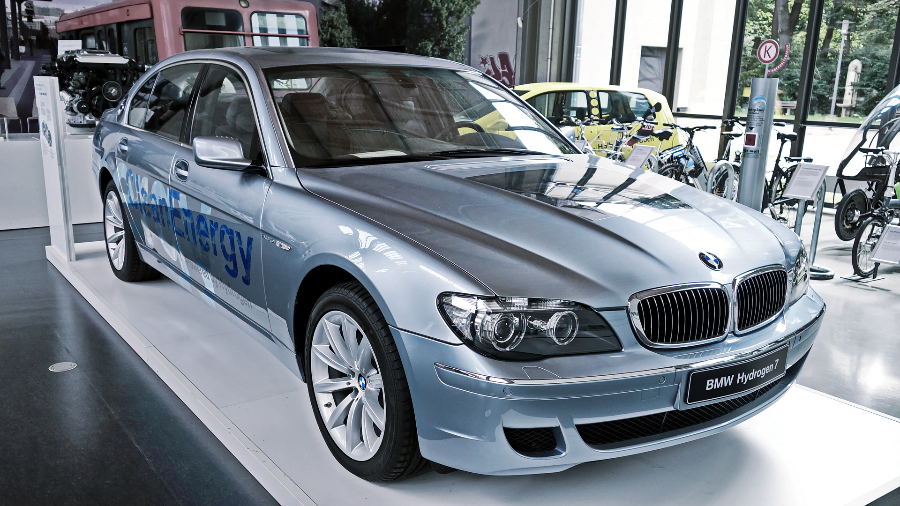
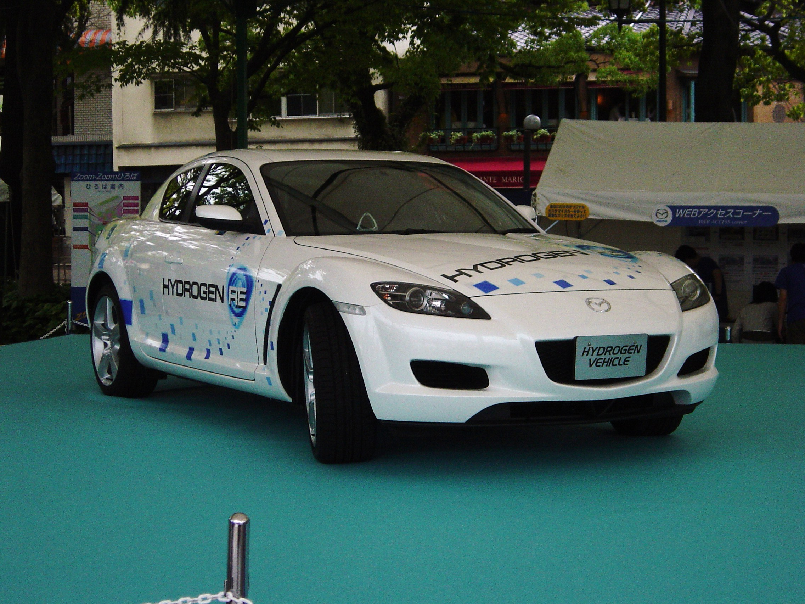
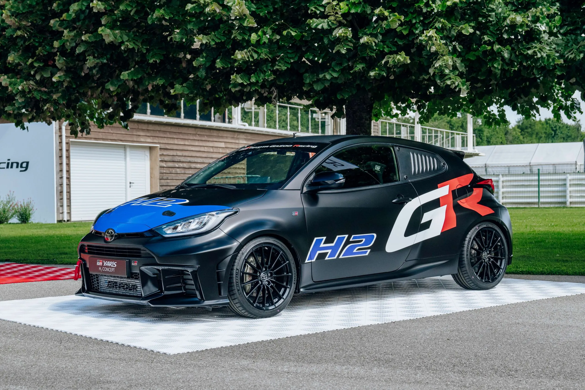
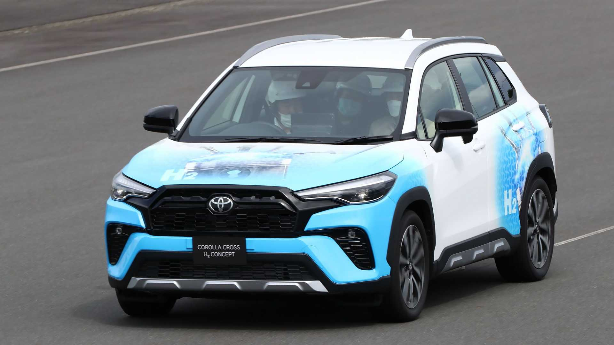

Produto usado pelo motorista
(1991)
Opcional para carro de 7 pessoas
primeiro conceito moderno. O ponto de partida moderno da combustão a hidrogênio. Este conceito foi projetado com um motor rotativo Wankel de dois rotores, provando na prática que a arquitetura rotativa é ideal para o gás, pois separa fisicamente a zona de admissão da zona de queima, eliminando o risco de pré-detonação (backfire).

Produto usado pelo motorista
(2000)
Opcional para carro de 7 pessoas
Sedan de luxo com motor V12 adaptado para queimar hidrogênio e gasolina. Demonstrou a viabilidade do hidrogênio em carros de grande porte.

Produto usado pelo motorista
(2006)
Opcional para carro de 8 pessoas
Evolução do conceito HR-X, agora com motor Renesis de dois rotores preparado para hidrogênio, mantendo a esportividade característica da Mazda.


Produto usado pelo motorista
(2021)
Opcional para carro de 2 pessoas
Motor de três cilindros 1.6 turbo convertido para hidrogênio, utilizado em competições e demonstrando alto desempenho com emissões quase zero.

Produto usado pelo motorista
(2021)
Opcional para carro de 4 pessoas
Superesportivo conceito com motor V6 biturbo a hidrogênio, unindo alta performance com sustentabilidade e design futurista.